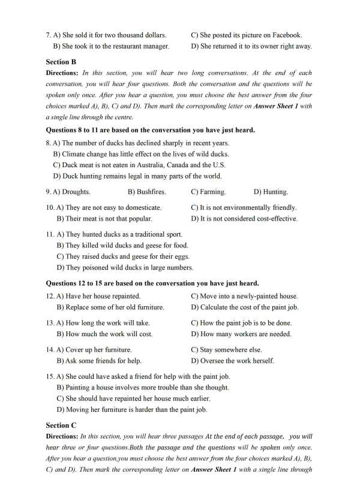
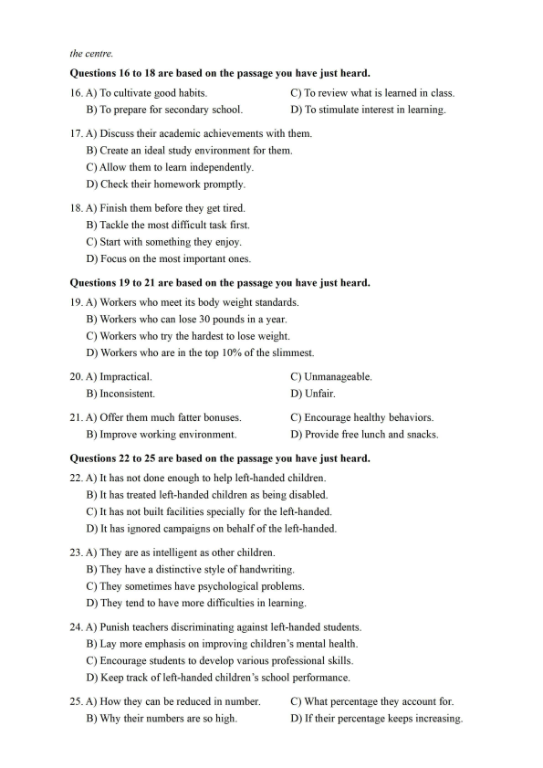
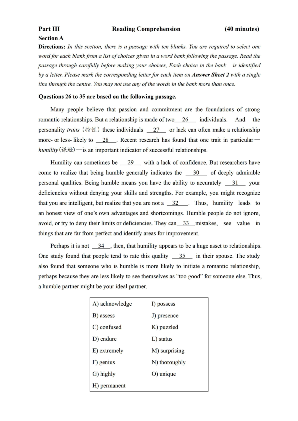
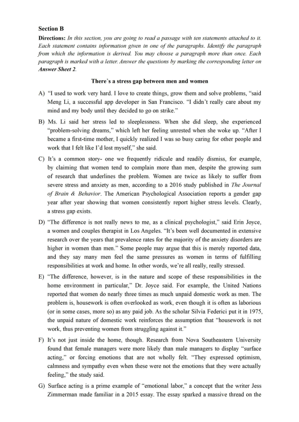
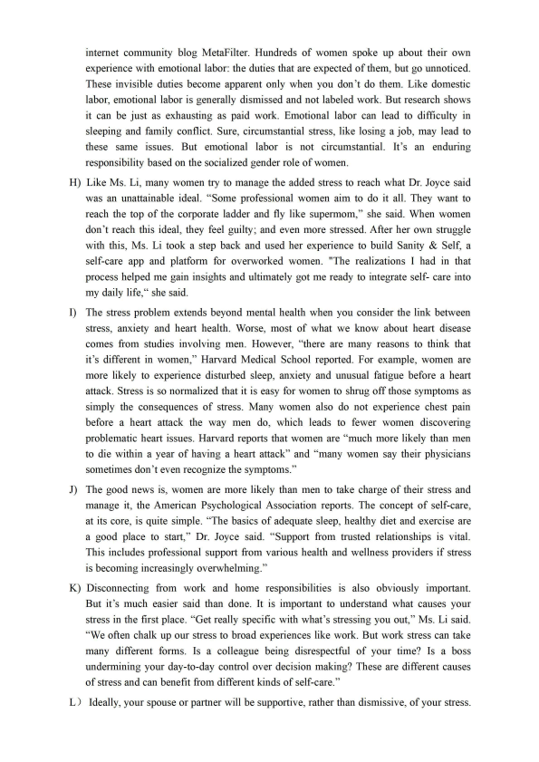
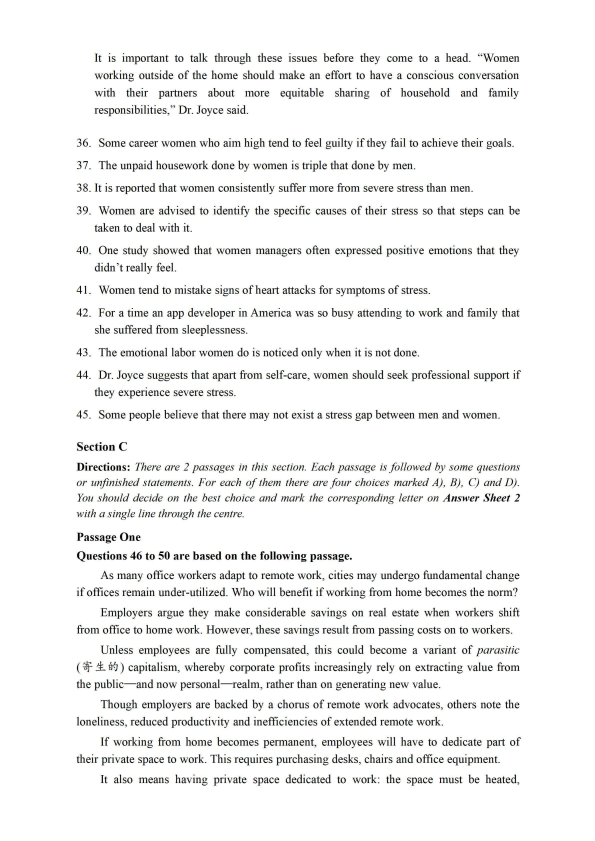
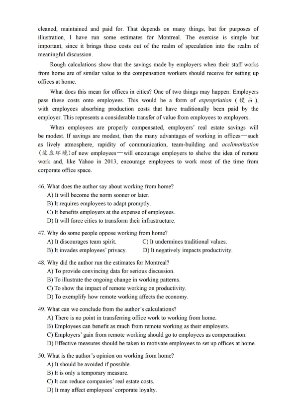
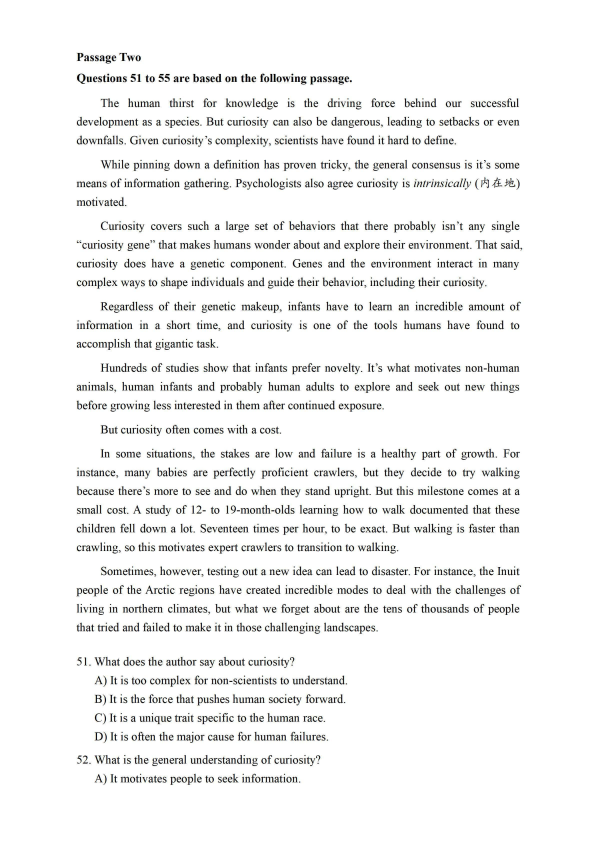
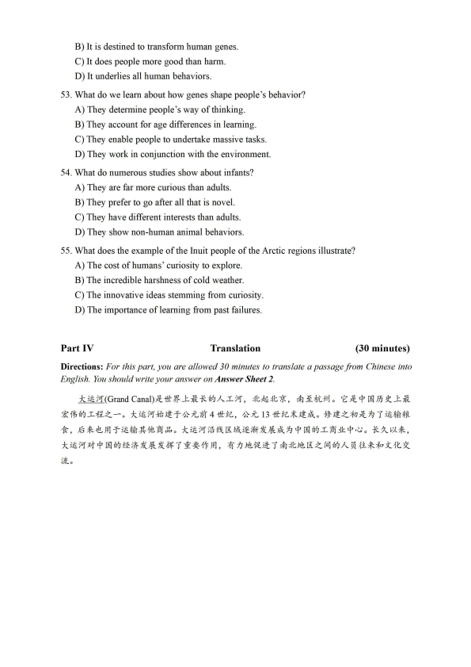

第 1 / 10 页

Part I
Writing
(30minutes)
Directions: Suppose your school is organizing an orientation program to help the f reshmen
adapt to the new environment and academic studies. You are now to write a proposal, which
may include its aim, duration, participants and activities. You will have 30 minutes to write the
proposal. You should write at least 120 words but no more than 180 words.
Part II
Section A
Listening Comprehension
(25 minutes)
Directions: In this section, you will hear three news reports. At the end of each news report,
you will hear two or three questions. Both the news report and the questions will be spoken only
once. After you hear a question, you must choose the best answer from the four choices marked
AJ, BJ, CJ and DJ. Then mark the corresponding letter on Answer Sheet 1 with a single line
through the centre.
Questions 1 and 2 are based on the news report you have just heard.
1. A) It found a pet dog on board a plane to a city in Texas.
B) It had one of its cargo planes land at a wrong airport.
C) It sent two dogs to the wrong destinations.
D) It had two of its domestic flights mixed up.
2. A) Correct their mistake as soon as possible.
B) Give the two pets a physical checkup.
C) Hire a charter jet to bring the pets back.
D) Send another plane to continue the flight.
Questions 3 and 4 are based on the news report you have just heard.
3. A) She weighs 130 kilograms.
C) She was brought from Africa.
B) She has had babies before.
D) She has a big family of six.
4. A) It took 22 hours.
C) It was smooth.
B) It had some complications.
D) It was monitored by Dr.Sue Tygielski.
Questions 5 to 7 are based on the news report you have just heard.
5. A) It enjoyed great popularity.
C) It was frequented by newly-weds.
B) It started business three years ago.
D) It was built above the sea-water.
6. A) Expand his business on the beach.
B) Replace the restaurant's wooden deck.
C) Post a picture of his restaurant online.
D) Celebrate his silver wedding anniversary.
查看 / 复制本页文字
Part I Writing (30minutes) Directions: Suppose your school is organizing an orientation program to help the f reshmen adapt to the new environment and academic studies. You are now to write a proposal, which may include its aim, duration, participants and activities. You will have 30 minutes to write the proposal. You should write at least 120 words but no more than 180 words. Part II Section A Listening Comprehension (25 minutes) Directions: In this section, you will hear three news reports. At the end of each news report, you will hear two or three questions. Both the news report and the questions will be spoken only once. After you hear a question, you must choose the best answer from the four choices marked AJ, BJ, CJ and DJ. Then mark the corresponding letter on Answer Sheet 1 with a single line through the centre. Questions 1 and 2 are based on the news report you have just heard. 1. A) It found a pet dog on board a plane to a city in Texas. B) It had one of its cargo planes land at a wrong airport. C) It sent two dogs to the wrong destinations. D) It had two of its domestic flights mixed up. 2. A) Correct their mistake as soon as possible. B) Give the two pets a physical checkup. C) Hire a charter jet to bring the pets back. D) Send another plane to continue the flight. Questions 3 and 4 are based on the news report you have just heard. 3. A) She weighs 130 kilograms. C) She was brought from Africa. B) She has had babies before. D) She has a big family of six. 4. A) It took 22 hours. C) It was smooth. B) It had some complications. D) It was monitored by Dr.Sue Tygielski. Questions 5 to 7 are based on the news report you have just heard. 5. A) It enjoyed great popularity. C) It was frequented by newly-weds. B) It started business three years ago. D) It was built above the sea-water. 6. A) Expand his business on the beach. B) Replace the restaurant's wooden deck. C) Post a picture of his restaurant online. D) Celebrate his silver wedding anniversary.
第 2 / 10 页

7. A) She sold it for two thousand dollars.
C) She posted its picture on Facebook.
B) She took it to the restaurant manager.
D) She returned it to its owner right away.
Section B
Directions: In this section, you will hear two long conversations. At the end of each
conversation, you will hear four questions. Both the conversation and the questions will be
spoken only once. After you hear a question, you must choose the best answer from the four
choices marked A), B), C) and D). Then mark the corresponding letter on Answer Sheet 1 with
a single line through the centre.
Questions 8 to 11 are based on the conversation you have just heard.
8. A) The number of ducks has declined sharply in recent years.
B) Climate change has little effect on the lives of wild ducks.
C) Duck meat is not eaten in Australia, Canada and the U.S.
D) Duck hunting remains legal in many parts of the world.
9. A) Droughts.
B) Bushfires.
C) Farming.
D) Hunting.
10. A) They are not easy to domesticate.
C) It is not environmentally friendly.
B) Their meat is not that popular.
D) It is not considered cost-effective.
11. A) They hunted ducks as a traditional sport.
B) They killed wild ducks and geese for food.
C) They raised ducks and geese for their eggs.
D) They poisoned wild ducks in large numbers.
Questions 12 to 15 are based on the conversation you have just heard.
12. A) Have her house repainted.
C) Move into a newly-painted house.
B) Replace some of her old furniture.
D) Calculate the cost of the paint job.
13. A) How long the work will take.
C) How the paint job is to be done.
B) How much the work will cost.
D) How many workers are needed.
14. A) Cover up her furniture.
C) Stay somewhere else.
B) Ask some friends for help.
D) Oversee the work herself.
15. A) She could have asked a friend for help with the paint job.
B) Painting a house involves more trouble than she thought.
C) She should have repainted her house much earlier.
D) Moving her furniture is harder than the paint job.
Section C
Directions: In this section, you will hear three passages At the end of each passage, you will
hear three or four questions.Both the passage and the questions will be spoken only once.
After you hear a question,you must choose the best answer from the four choices marked A), B),
C) and D). Then mark the corresponding letter on Answer Sheet 1 with a single line through
查看 / 复制本页文字
7. A) She sold it for two thousand dollars. C) She posted its picture on Facebook. B) She took it to the restaurant manager. D) She returned it to its owner right away. Section B Directions: In this section, you will hear two long conversations. At the end of each conversation, you will hear four questions. Both the conversation and the questions will be spoken only once. After you hear a question, you must choose the best answer from the four choices marked A), B), C) and D). Then mark the corresponding letter on Answer Sheet 1 with a single line through the centre. Questions 8 to 11 are based on the conversation you have just heard. 8. A) The number of ducks has declined sharply in recent years. B) Climate change has little effect on the lives of wild ducks. C) Duck meat is not eaten in Australia, Canada and the U.S. D) Duck hunting remains legal in many parts of the world. 9. A) Droughts. B) Bushfires. C) Farming. D) Hunting. 10. A) They are not easy to domesticate. C) It is not environmentally friendly. B) Their meat is not that popular. D) It is not considered cost-effective. 11. A) They hunted ducks as a traditional sport. B) They killed wild ducks and geese for food. C) They raised ducks and geese for their eggs. D) They poisoned wild ducks in large numbers. Questions 12 to 15 are based on the conversation you have just heard. 12. A) Have her house repainted. C) Move into a newly-painted house. B) Replace some of her old furniture. D) Calculate the cost of the paint job. 13. A) How long the work will take. C) How the paint job is to be done. B) How much the work will cost. D) How many workers are needed. 14. A) Cover up her furniture. C) Stay somewhere else. B) Ask some friends for help. D) Oversee the work herself. 15. A) She could have asked a friend for help with the paint job. B) Painting a house involves more trouble than she thought. C) She should have repainted her house much earlier. D) Moving her furniture is harder than the paint job. Section C Directions: In this section, you will hear three passages At the end of each passage, you will hear three or four questions.Both the passage and the questions will be spoken only once. After you hear a question,you must choose the best answer from the four choices marked A), B), C) and D). Then mark the corresponding letter on Answer Sheet 1 with a single line through
第 3 / 10 页

the centre.
Questions 16 to 18 are based on the passage you have just heard.
16. A) To cultivate good habits.
C) To review what is learned in class.
B) To prepare for secondary school.
D) To stimulate interest in learning.
17. A) Discuss their academic achievements with them.
B) Create an ideal study environment for them.
C) Allow them to learn independently.
D) Check their homework promptly.
18. A) Finish them before they get tired.
B) Tackle the most difficult task first.
C) Start with something they enjoy.
D) Focus on the most important ones.
Questions 19 to 21 are based on the passage you have just heard.
19. A) Workers who meet its body weight standards.
B) Workers who can lose 30 pounds in a year.
C) Workers who try the hardest to lose weight.
D) Workers who are in the top 10% of the slimmest.
20. A) Impractical.
C) Unmanageable.
B) Inconsistent.
D) Unfair.
21. A) Offer them much fatter bonuses.
C) Encourage healthy behaviors.
B) Improve working environment.
D) Provide free lunch and snacks.
Questions 22 to 25 are based on the passage you have just heard.
22. A) It has not done enough to help left-handed children.
B) It has treated left-handed children as being disabled.
C) It has not built facilities specially for the left-handed.
D) It has ignored campaigns on behalf of the left-handed.
23. A) They are as intelligent as other children.
B) They have a distinctive style of handwriting.
C) They sometimes have psychological problems.
D) They tend to have more difficulties in learning.
24. A) Punish teachers discriminating against left-handed students.
B) Lay more emphasis on improving children's mental health.
C) Encourage students to develop various professional skills.
D) Keep track of left-handed children's school performance.
25. A) How they can be reduced in number.
C) What percentage they account for.
B) Why their numbers are so high.
D) If their percentage keeps increasing.
查看 / 复制本页文字
the centre. Questions 16 to 18 are based on the passage you have just heard. 16. A) To cultivate good habits. C) To review what is learned in class. B) To prepare for secondary school. D) To stimulate interest in learning. 17. A) Discuss their academic achievements with them. B) Create an ideal study environment for them. C) Allow them to learn independently. D) Check their homework promptly. 18. A) Finish them before they get tired. B) Tackle the most difficult task first. C) Start with something they enjoy. D) Focus on the most important ones. Questions 19 to 21 are based on the passage you have just heard. 19. A) Workers who meet its body weight standards. B) Workers who can lose 30 pounds in a year. C) Workers who try the hardest to lose weight. D) Workers who are in the top 10% of the slimmest. 20. A) Impractical. C) Unmanageable. B) Inconsistent. D) Unfair. 21. A) Offer them much fatter bonuses. C) Encourage healthy behaviors. B) Improve working environment. D) Provide free lunch and snacks. Questions 22 to 25 are based on the passage you have just heard. 22. A) It has not done enough to help left-handed children. B) It has treated left-handed children as being disabled. C) It has not built facilities specially for the left-handed. D) It has ignored campaigns on behalf of the left-handed. 23. A) They are as intelligent as other children. B) They have a distinctive style of handwriting. C) They sometimes have psychological problems. D) They tend to have more difficulties in learning. 24. A) Punish teachers discriminating against left-handed students. B) Lay more emphasis on improving children's mental health. C) Encourage students to develop various professional skills. D) Keep track of left-handed children's school performance. 25. A) How they can be reduced in number. C) What percentage they account for. B) Why their numbers are so high. D) If their percentage keeps increasing.
第 4 / 10 页

Part III
Section A
Reading Comprehension
(40 minutes)
Directions: In this section, there is a passage with ten blanks. You are required to select one
word for each blank from a list of choices given in a word bank following the passage. Read the
passage through carefully before making your choices, Each choice in the bank
is identified
by a letter. Please mark the corresponding letter for each item on Answer Sheet 2 with a single
line through the centre. You may not use any of the words in the bank more than once.
Questions 26 to 35 are based on the following passage.
Many people believe that passion and commitment are the foundations of strong
romantic relationships. But a relationship is made of two
26
individuals.
And
the
personality traits ( 4,H1) these individuals
27
or lack can often make a relationship
more- or less- likely to
28
. Recent research has found that one trait in particular-
humility ( ilil:D -is an important indicator of successful relationships.
Humility can sometimes be
29
with a lack of confidence. But researchers have
come to realize that being humble generally indicates the
30
of deeply admirable
personal qualities. Being humble means you have the ability to accurately
31
your
deficiencies without denying your skills and strengths. For example, you might recognize
that you are intelligent, but realize that you are not a
32
. Thus, humility leads to
an honest view of one's own advantages and shortcomings. Humble people do not ignore,
avoid, or try to deny their limits or deficiencies. They can
33
mistakes, see value in
things that are far from perfect and identify areas for improvement.
Perhaps it is not
34
then, that humility appears to be a huge asset to relationships.
One study found that people tend to rate this quality
35
in their spouse. The study
also found that someone who is humble is more likely to initiate a romantic relationship,
perhaps because they are less likely to see themselves as "too good" for someone else. Thus,
a humble partner might be your ideal partner.
A) acknowledge
B) assess
C) confused
D) endure
E) extremely
F) genius
G) highly
H) permanent
I) possess
J) presence
K) puzzled
L) status
M) surprising
N) thoroughly
0) unique
查看 / 复制本页文字
Part III Section A Reading Comprehension (40 minutes) Directions: In this section, there is a passage with ten blanks. You are required to select one word for each blank from a list of choices given in a word bank following the passage. Read the passage through carefully before making your choices, Each choice in the bank is identified by a letter. Please mark the corresponding letter for each item on Answer Sheet 2 with a single line through the centre. You may not use any of the words in the bank more than once. Questions 26 to 35 are based on the following passage. Many people believe that passion and commitment are the foundations of strong romantic relationships. But a relationship is made of two 26 individuals. And the personality traits ( 4,H1) these individuals 27 or lack can often make a relationship more- or less- likely to 28 . Recent research has found that one trait in particular- humility ( ilil:D -is an important indicator of successful relationships. Humility can sometimes be 29 with a lack of confidence. But researchers have come to realize that being humble generally indicates the 30 of deeply admirable personal qualities. Being humble means you have the ability to accurately 31 your deficiencies without denying your skills and strengths. For example, you might recognize that you are intelligent, but realize that you are not a 32 . Thus, humility leads to an honest view of one's own advantages and shortcomings. Humble people do not ignore, avoid, or try to deny their limits or deficiencies. They can 33 mistakes, see value in things that are far from perfect and identify areas for improvement. Perhaps it is not 34 then, that humility appears to be a huge asset to relationships. One study found that people tend to rate this quality 35 in their spouse. The study also found that someone who is humble is more likely to initiate a romantic relationship, perhaps because they are less likely to see themselves as "too good" for someone else. Thus, a humble partner might be your ideal partner. A) acknowledge B) assess C) confused D) endure E) extremely F) genius G) highly H) permanent I) possess J) presence K) puzzled L) status M) surprising N) thoroughly 0) unique
第 5 / 10 页

Section B
Directions: In this section, you are going to read a passage with ten statements attached to it.
Each statement contains information given in one of the paragraphs. Identify the paragraph
from which the information is derived. You may choose a paragraph more than once. Each
paragraph is marked with a letter. Answer the questions by marking the corresponding letter on
Answer Sheet 2.
There's a stress gap between men and women
A) "I used to work very hard. I love to create things, grow them and solve problems, "said
Meng Li, a successful app developer in San Francisco. "I didn't really care about my
mind and my body until they decided to go on strike."
B) Ms. Li said her stress led to sleeplessness. When she did sleep, she experienced
"problem-solving dreams," which left her feeling unrested when she woke up. "After I
became a first-time mother, I quickly realized I was so busy caring for other people and
work that I felt like I'd lost myself," she said.
C) It's a common story- one we frequently ridicule and readily dismiss, for example,
by claiming that women tend to complain more than men, despite the growing sum
of research that underlines the problem. Women are twice as likely to suffer from
severe stress and anxiety as men, according to a 2016 study published in The Journal
of Brain & Behavior. The American Psychological Association reports a gender gap
year after year showing that women consistently report higher stress levels. Clearly,
a stress gap exists.
D) "The difference is not really news to me, as a clinical psychologist," said Erin Joyce,
a women and couples therapist in Los Angeles. "It's been well documented in extensive
research over the years that prevalence rates for the majority of the anxiety disorders are
higher in women than men." Some people may argue that this is merely reported data,
and they say many men feel the same pressures as women in terms of fulfilling
responsibilities at work and home. In other words, we're all really, really stressed.
E) "The difference, however, is in the nature and scope of these responsibilities in the
home environment in particular," Dr. Joyce said. For example, the United Nations
reported that women do nearly three times as much unpaid domestic work as men. The
problem is, housework is often overlooked as work, even though it is often as laborious
(or in some cases, more so) as any paid job. As the scholar Silvia Federici put it in 1975,
the unpaid nature of domestic work reinforces the assumption that "housework is not
work, thus preventing women from struggling against it."
F) It's not just inside the home, though. Research from Nova Southeastern University
found that female managers were more likely than male managers to display "surface
acting," or forcing emotions that are not wholly felt. "They expressed optimism,
calmness and sympathy even when these were not the emotions that they were actually
feeling," the study said.
G) Surface acting is a prime example of "emotional labor," a concept that the writer Jess
Zimmerman made familiar in a 2015 essay. The essay sparked a massive thread on the
查看 / 复制本页文字
Section B Directions: In this section, you are going to read a passage with ten statements attached to it. Each statement contains information given in one of the paragraphs. Identify the paragraph from which the information is derived. You may choose a paragraph more than once. Each paragraph is marked with a letter. Answer the questions by marking the corresponding letter on Answer Sheet 2. There's a stress gap between men and women A) "I used to work very hard. I love to create things, grow them and solve problems, "said Meng Li, a successful app developer in San Francisco. "I didn't really care about my mind and my body until they decided to go on strike." B) Ms. Li said her stress led to sleeplessness. When she did sleep, she experienced "problem-solving dreams," which left her feeling unrested when she woke up. "After I became a first-time mother, I quickly realized I was so busy caring for other people and work that I felt like I'd lost myself," she said. C) It's a common story- one we frequently ridicule and readily dismiss, for example, by claiming that women tend to complain more than men, despite the growing sum of research that underlines the problem. Women are twice as likely to suffer from severe stress and anxiety as men, according to a 2016 study published in The Journal of Brain & Behavior. The American Psychological Association reports a gender gap year after year showing that women consistently report higher stress levels. Clearly, a stress gap exists. D) "The difference is not really news to me, as a clinical psychologist," said Erin Joyce, a women and couples therapist in Los Angeles. "It's been well documented in extensive research over the years that prevalence rates for the majority of the anxiety disorders are higher in women than men." Some people may argue that this is merely reported data, and they say many men feel the same pressures as women in terms of fulfilling responsibilities at work and home. In other words, we're all really, really stressed. E) "The difference, however, is in the nature and scope of these responsibilities in the home environment in particular," Dr. Joyce said. For example, the United Nations reported that women do nearly three times as much unpaid domestic work as men. The problem is, housework is often overlooked as work, even though it is often as laborious (or in some cases, more so) as any paid job. As the scholar Silvia Federici put it in 1975, the unpaid nature of domestic work reinforces the assumption that "housework is not work, thus preventing women from struggling against it." F) It's not just inside the home, though. Research from Nova Southeastern University found that female managers were more likely than male managers to display "surface acting," or forcing emotions that are not wholly felt. "They expressed optimism, calmness and sympathy even when these were not the emotions that they were actually feeling," the study said. G) Surface acting is a prime example of "emotional labor," a concept that the writer Jess Zimmerman made familiar in a 2015 essay. The essay sparked a massive thread on the
第 6 / 10 页

internet community blog MetaFilter. Hundreds of women spoke up about their own
experience with emotional labor: the duties that are expected of them, but go unnoticed.
These invisible duties become apparent only when you don't do them. Like domestic
labor, emotional labor is generally dismissed and not labeled work. But research shows
it can be just as exhausting as paid work. Emotional labor can lead to difficulty in
sleeping and family conflict. Sure, circumstantial stress, like losing a job, may lead to
these same issues. But emotional labor is not circumstantial. It's an enduring
responsibility based on the socialized gender role of women.
H) Like Ms. Li, many women try to manage the added stress to reach what Dr. Joyce said
was an unattainable ideal. "Some professional women aim to do it all. They want to
reach the top of the corporate ladder and fly like supermom," she said. When women
don't reach this ideal, they feel guilty; and even more stressed. After her own struggle
with this, Ms. Li took a step back and used her experience to build Sanity & Self, a
self-care app and platform for overworked women. "The realizations I had in that
process helped me gain insights and ultimately got me ready to integrate self- care into
my daily life," she said.
I) The stress problem extends beyond mental health when you consider the link between
stress, anxiety and heart health. Worse, most of what we know about heart disease
comes from studies involving men. However, "there are many reasons to think that
it's different in women," Harvard Medical School reported. For example, women are
more likely to experience disturbed sleep, anxiety and unusual fatigue before a heart
attack. Stress is so normalized that it is easy for women to shrug off those symptoms as
simply the consequences of stress. Many women also do not experience chest pain
before a heart attack the way men do, which leads to fewer women discovering
problematic heart issues. Harvard reports that women are "much more likely than men
to die within a year of having a heart attack" and "many women say their physicians
sometimes don't even recognize the symptoms."
J) The good news is, women are more likely than men to take charge of their stress and
manage it, the American Psychological Association reports. The concept of self-care,
at its core, is quite simple. "The basics of adequate sleep, healthy diet and exercise are
a good place to start," Dr. Joyce said. "Support from trusted relationships is vital.
This includes professional support from various health and wellness providers if stress
is becoming increasingly overwhelming."
K) Disconnecting from work and home responsibilities 1s also obviously important.
But it's much easier said than done. It is important to understand what causes your
stress in the first place. "Get really specific with what's stressing you out," Ms. Li said.
"We often chalk up our stress to broad experiences like work. But work stress can take
many different forms. Is a colleague being disrespectful of your time? Is a boss
undermining your day-to-day control over decision making? These are different causes
of stress and can benefit from different kinds of self-care."
L ) Ideally, your spouse or partner will be supportive, rather than dismissive, of your stress.
查看 / 复制本页文字
internet community blog MetaFilter. Hundreds of women spoke up about their own experience with emotional labor: the duties that are expected of them, but go unnoticed. These invisible duties become apparent only when you don't do them. Like domestic labor, emotional labor is generally dismissed and not labeled work. But research shows it can be just as exhausting as paid work. Emotional labor can lead to difficulty in sleeping and family conflict. Sure, circumstantial stress, like losing a job, may lead to these same issues. But emotional labor is not circumstantial. It's an enduring responsibility based on the socialized gender role of women. H) Like Ms. Li, many women try to manage the added stress to reach what Dr. Joyce said was an unattainable ideal. "Some professional women aim to do it all. They want to reach the top of the corporate ladder and fly like supermom," she said. When women don't reach this ideal, they feel guilty; and even more stressed. After her own struggle with this, Ms. Li took a step back and used her experience to build Sanity & Self, a self-care app and platform for overworked women. "The realizations I had in that process helped me gain insights and ultimately got me ready to integrate self- care into my daily life," she said. I) The stress problem extends beyond mental health when you consider the link between stress, anxiety and heart health. Worse, most of what we know about heart disease comes from studies involving men. However, "there are many reasons to think that it's different in women," Harvard Medical School reported. For example, women are more likely to experience disturbed sleep, anxiety and unusual fatigue before a heart attack. Stress is so normalized that it is easy for women to shrug off those symptoms as simply the consequences of stress. Many women also do not experience chest pain before a heart attack the way men do, which leads to fewer women discovering problematic heart issues. Harvard reports that women are "much more likely than men to die within a year of having a heart attack" and "many women say their physicians sometimes don't even recognize the symptoms." J) The good news is, women are more likely than men to take charge of their stress and manage it, the American Psychological Association reports. The concept of self-care, at its core, is quite simple. "The basics of adequate sleep, healthy diet and exercise are a good place to start," Dr. Joyce said. "Support from trusted relationships is vital. This includes professional support from various health and wellness providers if stress is becoming increasingly overwhelming." K) Disconnecting from work and home responsibilities 1s also obviously important. But it's much easier said than done. It is important to understand what causes your stress in the first place. "Get really specific with what's stressing you out," Ms. Li said. "We often chalk up our stress to broad experiences like work. But work stress can take many different forms. Is a colleague being disrespectful of your time? Is a boss undermining your day-to-day control over decision making? These are different causes of stress and can benefit from different kinds of self-care." L ) Ideally, your spouse or partner will be supportive, rather than dismissive, of your stress.
第 7 / 10 页

It is important to talk through these issues before they come to a head. "Women
working outside of the home should make an effort to have a conscious conversation
with their partners about more equitable sharing of household and family
responsibilities," Dr. Joyce said.
36. Some career women who aim high tend to feel guilty if they fail to achieve their goals.
37. The unpaid housework done by women is triple that done by men.
38. It is reported that women consistently suffer more from severe stress than men.
39. Women are advised to identify the specific causes of their stress so that steps can be
taken to deal with it.
40. One study showed that women managers often expressed positive emotions that they
didn't really feel.
41. Women tend to mistake signs of heart attacks for symptoms of stress.
42. For a time an app developer in America was so busy attending to work and family that
she suffered from sleeplessness.
43. The emotional labor women do is noticed only when it is not done.
44. Dr. Joyce suggests that apart from self-care, women should seek professional support if
they experience severe stress.
45. Some people believe that there may not exist a stress gap between men and women.
Section C
Directions: There are 2 passages in this section. Each passage is followed by some questions
or unfinished statements. For each of them there are four choices marked AJ, BJ, CJ and DJ.
You should decide on the best choice and mark the corresponding letter on Answer Sheet 2
with a single line through the centre.
Passage One
Questions 46 to 50 are based on the following passage.
As many office workers adapt to remote work, cities may undergo fundamental change
if offices remain under-utilized. Who will benefit if working from home becomes the norm?
Employers argue they make considerable savings on real estate when workers shift
from office to home work. However, these savings result from passing costs on to workers.
Unless employees are fully compensated, this could become a variant of parasitic
( ~ 1.. 69 ) capitalism, whereby corporate profits increasingly rely on extracting value from
the public- and now personal- realm, rather than on generating new value.
Though employers are backed by a chorus of remote work advocates, others note the
loneliness, reduced productivity and inefficiencies of extended remote work.
If working from home becomes permanent, employees will have to dedicate part of
their private space to work. This requires purchasing desks, chairs and office equipment.
It also means having private space dedicated to work: the space must be heated,
查看 / 复制本页文字
It is important to talk through these issues before they come to a head. "Women working outside of the home should make an effort to have a conscious conversation with their partners about more equitable sharing of household and family responsibilities," Dr. Joyce said. 36. Some career women who aim high tend to feel guilty if they fail to achieve their goals. 37. The unpaid housework done by women is triple that done by men. 38. It is reported that women consistently suffer more from severe stress than men. 39. Women are advised to identify the specific causes of their stress so that steps can be taken to deal with it. 40. One study showed that women managers often expressed positive emotions that they didn't really feel. 41. Women tend to mistake signs of heart attacks for symptoms of stress. 42. For a time an app developer in America was so busy attending to work and family that she suffered from sleeplessness. 43. The emotional labor women do is noticed only when it is not done. 44. Dr. Joyce suggests that apart from self-care, women should seek professional support if they experience severe stress. 45. Some people believe that there may not exist a stress gap between men and women. Section C Directions: There are 2 passages in this section. Each passage is followed by some questions or unfinished statements. For each of them there are four choices marked AJ, BJ, CJ and DJ. You should decide on the best choice and mark the corresponding letter on Answer Sheet 2 with a single line through the centre. Passage One Questions 46 to 50 are based on the following passage. As many office workers adapt to remote work, cities may undergo fundamental change if offices remain under-utilized. Who will benefit if working from home becomes the norm? Employers argue they make considerable savings on real estate when workers shift from office to home work. However, these savings result from passing costs on to workers. Unless employees are fully compensated, this could become a variant of parasitic ( ~ 1.. 69 ) capitalism, whereby corporate profits increasingly rely on extracting value from the public- and now personal- realm, rather than on generating new value. Though employers are backed by a chorus of remote work advocates, others note the loneliness, reduced productivity and inefficiencies of extended remote work. If working from home becomes permanent, employees will have to dedicate part of their private space to work. This requires purchasing desks, chairs and office equipment. It also means having private space dedicated to work: the space must be heated,
第 8 / 10 页

cleaned, maintained and paid for. That depends on many things, but for purposes of
illustration, I have run some estimates for Montreal. The exercise is simple but
important, since it brings these costs out of the realm of speculation into the realm of
meaningful discussion.
Rough calculations show that the savings made by employers when their staff works
from home are of similar value to the compensation workers should receive for setting up
offices at home.
What does this mean for offices in cities? One of two things may happen: Employers
pass these costs onto employees. This would be a form of expropriation ( 1! Ji ),
with employees absorbing production costs that have traditionally been paid by the
employer. This represents a considerable transfer of value from employees to employers.
When employees are properly compensated, employers' real estate savings will
be modest. If savings are modest, then the many advantages of working in offices-such
as lively atmosphere, rapidity of communication, team-building and acclimatization
( it EL J;f- .t;t) of new employees-will encourage employers to shelve the idea of remote
work and, like Yahoo in 2013, encourage employees to work most of the time from
corporate office space.
46. What does the author say about working from home?
A) It will become the norm sooner or later.
B) It requires employees to adapt promptly.
C) It benefits employers at the expense of employees.
D) It will force cities to transform their infrastructure.
4 7. Why do some people oppose working from home?
A) It discourages team spirit.
C) It undermines traditional values.
B) It invades employees' privacy.
D) It negatively impacts productivity.
48. Why did the author run the estimates for Montreal?
A) To provide convincing data for serious discussion.
B) To illustrate the ongoing change in working patterns.
C) To show the impact of remote working on productivity.
D) To exemplify how remote working affects the economy.
49. What can we conclude from the author's calculations?
A) There is no point in transferring office work to working from home.
B) Employees can benefit as much from remote working as their employers.
C) Employers' gain from remote working should go to employees as compensation.
D) Effective measures should be taken to motivate employees to set up offices at home.
50. What is the author's opinion on working from home?
A) It should be avoided if possible.
B) It is only a temporary measure.
C) It can reduce companies' real estate costs.
D) It may affect employees' corporate loyalty.
查看 / 复制本页文字
cleaned, maintained and paid for. That depends on many things, but for purposes of illustration, I have run some estimates for Montreal. The exercise is simple but important, since it brings these costs out of the realm of speculation into the realm of meaningful discussion. Rough calculations show that the savings made by employers when their staff works from home are of similar value to the compensation workers should receive for setting up offices at home. What does this mean for offices in cities? One of two things may happen: Employers pass these costs onto employees. This would be a form of expropriation ( 1! Ji ), with employees absorbing production costs that have traditionally been paid by the employer. This represents a considerable transfer of value from employees to employers. When employees are properly compensated, employers' real estate savings will be modest. If savings are modest, then the many advantages of working in offices-such as lively atmosphere, rapidity of communication, team-building and acclimatization ( it EL J;f- .t;t) of new employees-will encourage employers to shelve the idea of remote work and, like Yahoo in 2013, encourage employees to work most of the time from corporate office space. 46. What does the author say about working from home? A) It will become the norm sooner or later. B) It requires employees to adapt promptly. C) It benefits employers at the expense of employees. D) It will force cities to transform their infrastructure. 4 7. Why do some people oppose working from home? A) It discourages team spirit. C) It undermines traditional values. B) It invades employees' privacy. D) It negatively impacts productivity. 48. Why did the author run the estimates for Montreal? A) To provide convincing data for serious discussion. B) To illustrate the ongoing change in working patterns. C) To show the impact of remote working on productivity. D) To exemplify how remote working affects the economy. 49. What can we conclude from the author's calculations? A) There is no point in transferring office work to working from home. B) Employees can benefit as much from remote working as their employers. C) Employers' gain from remote working should go to employees as compensation. D) Effective measures should be taken to motivate employees to set up offices at home. 50. What is the author's opinion on working from home? A) It should be avoided if possible. B) It is only a temporary measure. C) It can reduce companies' real estate costs. D) It may affect employees' corporate loyalty.
第 9 / 10 页

Passage Two
Questions 51 to 55 are based on the following passage.
The human thirst for knowledge is the driving force behind our successful
development as a species. But curiosity can also be dangerous, leading to setbacks or even
downfalls. Given curiosity's complexity, scientists have found it hard to define.
While pinning down a definition has proven tricky, the general consensus is it's some
means of information gathering. Psychologists also agree curiosity is intrinsically ( p;] {f. Jtl!,)
motivated.
Curiosity covers such a large set of behaviors that there probably isn't any single
"curiosity gene" that makes humans wonder about and explore their environment. That said,
curiosity does have a genetic component. Genes and the environment interact in many
complex ways to shape individuals and guide their behavior, including their curiosity.
Regardless of their genetic makeup, infants have to learn an incredible amount of
information in a short time, and curiosity is one of the tools humans have found to
accomplish that gigantic task.
Hundreds of studies show that infants prefer novelty. It's what motivates non-human
animals, human infants and probably human adults to explore and seek out new things
before growing less interested in them after continued exposure.
But curiosity often comes with a cost.
In some situations, the stakes are low and failure is a healthy part of growth. For
instance, many babies are perfectly proficient crawlers, but they decide to try walking
because there's more to see and do when they stand upright. But this milestone comes at a
small cost. A study of 12- to 19-month-olds learning how to walk documented that these
children fell down a lot. Seventeen times per hour, to be exact. But walking is faster than
crawling, so this motivates expert crawlers to transition to walking.
Sometimes, however, testing out a new idea can lead to disaster. For instance, the Inuit
people of the Arctic regions have created incredible modes to deal with the challenges of
living in northern climates, but what we forget about are the tens of thousands of people
that tried and failed to make it in those challenging landscapes.
51. What does the author say about curiosity?
A) It is too complex for non-scientists to understand.
B) It is the force that pushes human society forward.
C) It is a unique trait specific to the human race.
D) It is often the major cause for human failures.
52. What is the general understanding of curiosity?
A) It motivates people to seek information.
查看 / 复制本页文字
Passage Two
Questions 51 to 55 are based on the following passage.
The human thirst for knowledge is the driving force behind our successful
development as a species. But curiosity can also be dangerous, leading to setbacks or even
downfalls. Given curiosity's complexity, scientists have found it hard to define.
While pinning down a definition has proven tricky, the general consensus is it's some
means of information gathering. Psychologists also agree curiosity is intrinsically ( p;] {f. Jtl!,)
motivated.
Curiosity covers such a large set of behaviors that there probably isn't any single
"curiosity gene" that makes humans wonder about and explore their environment. That said,
curiosity does have a genetic component. Genes and the environment interact in many
complex ways to shape individuals and guide their behavior, including their curiosity.
Regardless of their genetic makeup, infants have to learn an incredible amount of
information in a short time, and curiosity is one of the tools humans have found to
accomplish that gigantic task.
Hundreds of studies show that infants prefer novelty. It's what motivates non-human
animals, human infants and probably human adults to explore and seek out new things
before growing less interested in them after continued exposure.
But curiosity often comes with a cost.
In some situations, the stakes are low and failure is a healthy part of growth. For
instance, many babies are perfectly proficient crawlers, but they decide to try walking
because there's more to see and do when they stand upright. But this milestone comes at a
small cost. A study of 12- to 19-month-olds learning how to walk documented that these
children fell down a lot. Seventeen times per hour, to be exact. But walking is faster than
crawling, so this motivates expert crawlers to transition to walking.
Sometimes, however, testing out a new idea can lead to disaster. For instance, the Inuit
people of the Arctic regions have created incredible modes to deal with the challenges of
living in northern climates, but what we forget about are the tens of thousands of people
that tried and failed to make it in those challenging landscapes.
51. What does the author say about curiosity?
A) It is too complex for non-scientists to understand.
B) It is the force that pushes human society forward.
C) It is a unique trait specific to the human race.
D) It is often the major cause for human failures.
52. What is the general understanding of curiosity?
A) It motivates people to seek information.
第 10 / 10 页

B) It is destined to transform human genes.
C) It does people more good than harm.
D) It underlies all human behaviors.
53. What do we learn about how genes shape people's behavior?
A) They determine people's way of thinking.
B) They account for age differences in learning.
C) They enable people to undertake massive tasks.
D) They work in conjunction with the environment.
54. What do numerous studies show about infants?
A) They are far more curious than adults.
B) They prefer to go after all that is novel.
C) They have different interests than adults.
D) They show non-human animal behaviors.
5 5. What does the example of the Inuit people of the Arctic regions illustrate?
A) The cost of humans' curiosity to explore.
B) The incredible harshness of cold weather.
C) The innovative ideas stemming from curiosity.
D) The importance of learning from past failures.
Part IV
Translation
(30 minutes)
Directions: For this part, you are allowed 30 minutes to translate a passage from Chinese into
English. You should write your answer on Answer Sheet 2.
:k :i£ ~iif (Grand Canal) ;,l -tlt-Jf-J:. Jfl * a{i A ..:L ~iif , ;Jl::.,if ;JI::. it, , m
.f.;fit fl·J o 't ;,l 'f 00 JJj :t. J:. Jfl
~ ~~i«z-o :k:i£~~~r~~~~4 -tlt-~ .~~ 13 -tlt-~ *~Ao*~z~Jt.h1:i£-~
~ , J6 *
~ Jfl T :E fif,j' $,-11!:. ,ey J'a o :k :E ~ii)" ~/H\ 1K .t,& :ii if}f ~~Ah 'f 00 fl9 ..:L ,ey ~ 'f •u o * 7'. VA*,
:k :i£ ~iif xt 'f 00 a{i ti 8} ~ ~
~
-if 1 Y ~
11 Jfl , ~ /J;t 1-t.i! 1 m
;JI::. .tt 1K Z (a] ~ A Jn ,fl. *
{a ;t_ 1t 5Z.
:i;;
/Jtl. 0
查看 / 复制本页文字
B) It is destined to transform human genes.
C) It does people more good than harm.
D) It underlies all human behaviors.
53. What do we learn about how genes shape people's behavior?
A) They determine people's way of thinking.
B) They account for age differences in learning.
C) They enable people to undertake massive tasks.
D) They work in conjunction with the environment.
54. What do numerous studies show about infants?
A) They are far more curious than adults.
B) They prefer to go after all that is novel.
C) They have different interests than adults.
D) They show non-human animal behaviors.
5 5. What does the example of the Inuit people of the Arctic regions illustrate?
A) The cost of humans' curiosity to explore.
B) The incredible harshness of cold weather.
C) The innovative ideas stemming from curiosity.
D) The importance of learning from past failures.
Part IV
Translation
(30 minutes)
Directions: For this part, you are allowed 30 minutes to translate a passage from Chinese into
English. You should write your answer on Answer Sheet 2.
:k :i£ ~iif (Grand Canal) ;,l -tlt-Jf-J:. Jfl * a{i A ..:L ~iif , ;Jl::.,if ;JI::. it, , m
.f.;fit fl·J o 't ;,l 'f 00 JJj :t. J:. Jfl
~ ~~i«z-o :k:i£~~~r~~~~4 -tlt-~ .~~ 13 -tlt-~ *~Ao*~z~Jt.h1:i£-~
~ , J6 *
~ Jfl T :E fif,j' $,-11!:. ,ey J'a o :k :E ~ii)" ~/H\ 1K .t,& :ii if}f ~~Ah 'f 00 fl9 ..:L ,ey ~ 'f •u o * 7'. VA*,
:k :i£ ~iif xt 'f 00 a{i ti 8} ~ ~
~
-if 1 Y ~
11 Jfl , ~ /J;t 1-t.i! 1 m
;JI::. .tt 1K Z (a] ~ A Jn ,fl. *
{a ;t_ 1t 5Z.
:i;;
/Jtl. 0